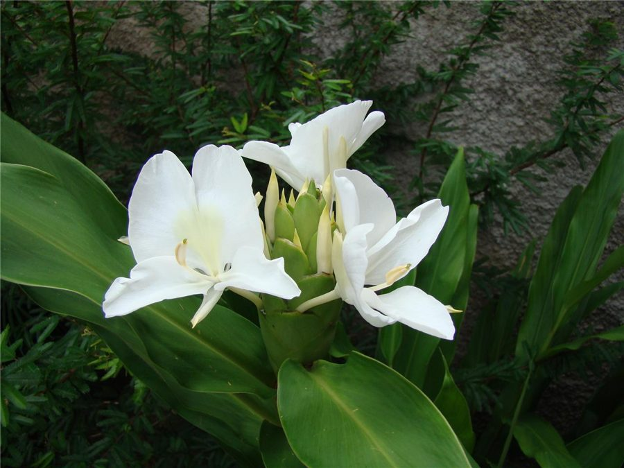

व्हाइट जिंजर लिलीWhite Ginger Lily
Hedychium coronarium · Zingiberaceae · FLR-0426

- Scientific name वैज्ञानिक नाम
- Hedychium coronarium J.Koenig
- Family कुल
- Zingiberaceae
- Hindi हिंदी
- व्हाइट जिंजर लिली
- Local names स्थानीय नाम
- white ginger lily, butterfly lily
- Status here यहाँ की स्थिति
- native
- Movement आवागमन
- Resident, here all year
- Known from कहाँ दर्ज
- Others have published records from the Basti–Ayodhya districts बस्ती–अयोध्या के ज़िलों से दूसरों के प्रकाशित अभिलेख
- IUCN IUCN
- DD
- Review समीक्षा
- not yet reviewed
When to look कब देखें
Expected mainly in July, August, September. मुख्यतः जुलाई, अगस्त, सितंबर में अपेक्षित।
Uses and possibilities उपयोग और संभावनाएँ
Drawn from the documented uses in the profile below, where each is labelled traditional, current or a research lead. All uses →
व्हाइट जिंजर लिली / White Ginger Lily
Hedychium coronarium J.Koenig — Zingiberaceae
व्हाइट जिंजर लिली — तराई के दलदली कछारों और नमी वाले नालों के किनारे उगने वाला यह एक सुगंधित पौधा है। इसकी जड़ में अदरक जैसा मोटा कंद होता है और तने पर चौड़े चिकने पत्ते लगते हैं। मानसून के समय इसके शीर्ष पर सफेद तितली जैसे खूबसूरत फूल खिलते हैं, जिनकी भीनी-भीनी खुशबू शाम ढलते ही फैल जाती है।
Quick Identification त्वरित पहचान
| Feature | Description |
|---|---|
| Habit | Robust, erect perennial rhizomatous herb forming dense leafy clumps |
| Rootstock | Thick, fleshy, creeping, horizontally branching aromatic rhizome |
| Leaves | Alternate, distichous, sessile, oblong-lanceolate, finely acuminate, smooth |
| Inflorescence | Dense, terminal, cone-like spike of closely imbricated green bracts |
| Flowers | Large, snowy-white, intensely fragrant, resembling fluttering white butterflies |
| Labellum | Broad, obcordate, deeply notched at apex, with a soft yellowish-green blotch |
Field tip: Look along marshy drainage lines, wetland fringes, and shady village gardens during the rains. The tall leafy stems terminating in dense spikes of pure white butterfly-like flowers with an overpowering evening perfume identify it instantly.
हिंदी: इसके पौधे घने झुंड में उगते हैं और इनके पत्ते अदरक जैसे होते हैं। शाम को खिलने वाले इसके सफेद तितलीनुमा फूल अपनी तेज खुशबू से दूर से ही पहचाने जाते हैं।
Morphology आकारिकी
| Measurement / Trait | Range / Description |
|---|---|
| Stature | Tall herbaceous perennial rising from an underground creeping rhizome |
| Leaf-length | 9–14 in. (Duthie 1920) |
| Leaf-blade | Lanceolate, finely acuminate, glabrous above, sparsely pubescent beneath |
| Flower spike | Dense, compact, terminal, oblong spike with closely imbricate bracts |
| Corolla-tube | Slender, elongated, green, dividing into narrow reflexed segments |
| Lip-width | Broadly obovate or rounded, two-lobed, suddenly contracted into a claw |
| Fruit & Seeds | Oblong capsule containing numerous seeds enveloped in a crimson aril |
A robust perennial herb with erect leafy pseudostems rising from a horizontal, jointed, fleshy aromatic rootstock. The leaves are sessile, measuring oblong-lanceolate with a tapering acuminate tip and a smooth membranous ligule.
The flowers are clustered in a dense terminal spike composed of overlapping subcoriaceous bracts. The corolla tube is long and slender, bearing snowy-white petaloid staminodes and a large, butterfly-like two-lobed lip with a pale greenish-yellow wash at the throat.
हिंदी: इसके पौधे काफी ऊंचे होते हैं और पत्तियां 9–14 in. लंबी होती हैं। तने के सिरे पर पत्तियों जैसी हरी गांठों के बीच से बड़े सफेद सुगंधित फूल निकलते हैं।
Behaviour & Ecology व्यवहार और पारिस्थितिकी
White ginger lily is an obligate wetland and riparian plant requiring constantly moist or saturated soils with high organic matter. It forms extensive clonal stands through vegetative extension of its horizontal subterranean rhizomes along watercourses.
The large white flowers exhibit specialized adaptations for sphingophilous pollination: they open in late afternoon, emit a powerful sweet fragrance after dusk, and display pale reflective petals easily located in darkness by long-tongued hawk moths (Sphingidae).
हिंदी: यह पौधा हमेशा गीली रहने वाली दलदली जमीन पर पनपता है। इसके सफेद फूल शाम के समय खिलते हैं और रात में उड़ने वाले पतंगों को खुशबू से आकर्षित करते हैं।
Life Cycle / Phenology जीवन चक्र
Duthie (1920, p. 233) records of Hedychium coronarium: "Flowers during the rains."
The underground rhizome overwinters in damp mud, with rapid vegetative shooting commencing with monsoon rainfall. Hawk moths transfer pollen between nocturnal blossoms, after which oblong capsules ripen containing seeds enveloped in a crimson aril (Duthie 1920, p. 233).
हिंदी: दूथी (1920, पृ. 233) के अनुसार यह बरसात के मौसम में फूलता है। रात में उड़ने वाले पतंगे इसके फूलों पर परागण करते हैं और पकने पर लाल गूदेदार बीजों वाले फल बनते हैं।
Associated Species / Interactions सहजीवी प्रजातियाँ
Grows naturally in riparian gallery forest margins alongside wetland trees including जामुन (Syzygium cumini) and साल (Shorea robusta), frequently co-occurring with riparian herbs like लॉन ऑर्किड (Zeuxine strateumatica).
The primary pollinators are nocturnal hawk moths including the sweetpotato hawk moth (Agrius convolvuli). The dense root systems stabilize soft riverbank silt, reducing soil erosion during heavy monsoon runoff events.
हिंदी: यह जामुन के पेड़ों के नीचे और दलदली नालों के किनारे उगता है। रात के बड़े पतंगे इसके फूलों का रस पीते हैं और परागण में मदद करते हैं।
Pests and Diseases कीट और रोग
Rhizomes can suffer from soft rot caused by bacterial pathogens like Pectobacterium carotovorum if drainage becomes completely stagnant in poorly oxygenated mud.
Foliage is susceptible to leaf blight (Colletotrichum) during exceptionally humid spells, creating concentric brownish lesions on older leaf blades. Pseudostem borer caterpillars occasionally hollow out young growing shoots.
हिंदी: गंदे और सड़े हुए पानी में इसके कंद गल सकते हैं। बरसात में पत्तियों पर फफूंद के भूरे चकत्ते पड़ सकते हैं और तना छेदक कीड़े तनों को नुकसान पहुंचा सकते हैं।
Agricultural / Human Relevance कृषि प्रासंगिकता
Duthie (1920, p. 233) notes the plant's utility: "See Kew Bulletin (No. 9, 1912) for an account of the fibre yielded by this and allied species of Hedychium, and of its value as a material for paper-making." No medicinal use from an opened source is recorded for this species.
हिंदी: दुथी (1920, पृ. 233) के अनुसार इसके तने से निकलने वाले रेशे का उपयोग कागज बनाने में किया जा सकता है।
Expected Locally स्थानीय रूप से अपेक्षित
Not a field record. Written from published accounts for eastern Uttar Pradesh. No confirmed local sighting yet — if you have seen it, that is what the atlas needs.
अभी तक स्थानीय पुष्टि नहीं। यह विवरण प्रकाशित स्रोतों से है, किसी अवलोकन से नहीं।
GBIF holds published records from these districts.
GBIF holds records from Basti, Bahraich, Gonda, Sonbhadra and Varanasi, among other districts. In Basti and Ayodhya, searchers should check wet ditch margins and old garden borders along the Saryu basin during the monsoon. A confirmed field voucher requires a photograph of the terminal flower spike, broad ligulate leaves, and rhizome characteristics, with date and coordinates.
हिंदी: इन जिलों से इसके प्रकाशित प्रमाण मौजूद हैं। बस्ती और अयोध्या के पुराने बगीचों और नालों के पास शाम को खिलने वाले इस सुगंधित पौधे को देखा जा सकता है।
Distribution वितरण
Duthie (1920, p. 233) gives the distribution as: "Throughout India from the Himalaya and the Khasia Hills southwards to Chittagong, Bengal, Kanara, Konkan and Ceylon, extending to Malay Pen. and Islands."
Within the area of his flora Duthie (1920, p. 233) records it only from Dehra Dun; it is widely planted as a fragrant garden ornamental.
हिंदी: दूथी (1920, पृ. 233) के अनुसार इसका विस्तार हिमालय और खासी पहाड़ियों से लेकर दक्षिण में बंगाल, कनारा, कोंकण, श्रीलंका तथा मलाया तक है। दूथी के क्षेत्र में इसका रिकॉर्ड केवल देहरादून से है; यह बगीचों में सुगंधित पौधे के रूप में लगाया जाता है।
Research Questions शोध प्रश्न
- Which sphingid moth species serve as the primary pollinators of Hedychium coronarium in the riparian habitats of eastern Uttar Pradesh?
- Does the essential oil profile of wild Terai populations differ significantly from cultivated garden ornamental varieties?
- क्या गुलबकावली के फूलों के पारंपरिक अर्क में आंखों की जलन कम करने वाले सक्रिय रासायनिक तत्व मौजूद हैं?
- How effectively can this species be integrated into constructed wetlands for peri-urban wastewater biofiltration?
- क्या इसके तने से उच्च गुणवत्ता वाला कागज और प्राकृतिक रेशा ग्रामीण स्तर पर बनाया जा सकता है?
हिंदी: क्या इस पौधे के फूलों से आंखों की दवा बनाने के पारंपरिक दावों में वैज्ञानिक सत्यता है, इस पर प्रयोगशाला परीक्षण की आवश्यकता है।
Similar Species मिलती-जुलती प्रजातियाँ
| Species | Key Differences | Habitat / Occurrence | |
|---|---|---|---|
| Hedychium spicatum (Kapur Kachri) | Flowers smaller, white with orange-red bases; bracts shorter; leaves narrower | Montane forests of the Himalayan foothills | |
| Zingiber officinale (Ginger) | Slender stems; narrow leaves; small purple-lipped flowers in compact cone-like spikes | Cultivated commercially in fields and vegetable gardens | |
| Canna indica (Indian Shot) | Broad asymmetric leaves; flowers bright scarlet or yellow, not butterfly-shaped | Wet ditches, pond margins, and waste ground | |
| [[lawn_orchid | लॉन ऑर्किड (Zeuxine strateumatica)]] | Miniature winter terrestrial orchid; tiny white flowers; dry or grassy turf | Irrigated lawns, grassy banks, and alluvial sandbars |
Field rule: A tall marshland ginger with smooth broad leaves and large, intensely fragrant pure white butterfly-like flowers emerging from a terminal cone-like spike is Hedychium coronarium.
हिंदी: कपूर कचरी (Hedychium spicatum) के फूलों का आधार नारंगी होता है, जबकि गुलबकावली के फूल पूरी तरह दूधिया सफेद और तितली जैसे होते हैं।
Taxonomy & Classification वर्गीकरण
Original description. Described by Johann Gerhard Koenig in 1783 in Anders Jahan Retzius's Observationes Botanicae, volume 3, page 73 (Hedychium coronarium J.Koenig). The genus name combines the Greek hedys (sweet) and chion (snow).
Subspecies. Monotypic; no valid subspecies are recognized, though several horticultural cultivars with pale yellow, peach, or double-flowered perianths are propagated internationally.
Family and order placement. Placed in the ginger family Zingiberaceae, subfamily Zingiberoideae, tribe Zingibereae, and order Zingiberales.
IUCN status rationale. Evaluated as Data Deficient (DD) on the IUCN Red List due to unresolved questions regarding the exact boundaries between purely wild indigenous populations and ancient widespread cultivated introductions across tropical Asia.
हिंदी: कोएनिग ने 1783 में इसका नामकरण किया था। यह अदरक कुल (जिंजिबरेसी) का पौधा है और जंगली तथा पालतू पौधों के घालमेल के कारण आईयूसीएन द्वारा इसे डेटा डेफिशिएंट (DD) श्रेणी में रखा गया है।
Photo Gallery फोटो गैलरी
No photos yet. (Contributions welcome!)
References संदर्भ
- Koenig, J. (1783). In Retzius, A. J., Observationes Botanicae, Fasciculus III. Apud Siegfried Lebrecht Crusium, Lipsiae, p. 73.
- Duthie, J. F. (1920). Flora of the Upper Gangetic Plain, and of the Adjacent Siwalik and Sub-Himalayan Tracts, Vol. 3, Part 2. Superintendent of Government Printing, Calcutta, pp. 232–233.
- IUCN Red List of Threatened Species (2026). Hedychium coronarium. Version 2025-2.
- GBIF Secretariat (2026). Hedychium coronarium J.Koenig. GBIF Backbone Taxonomy. Checklist dataset https://doi.org/10.15468/39omei.
Source file: species/flora/medicinal/white_ginger_lily.md